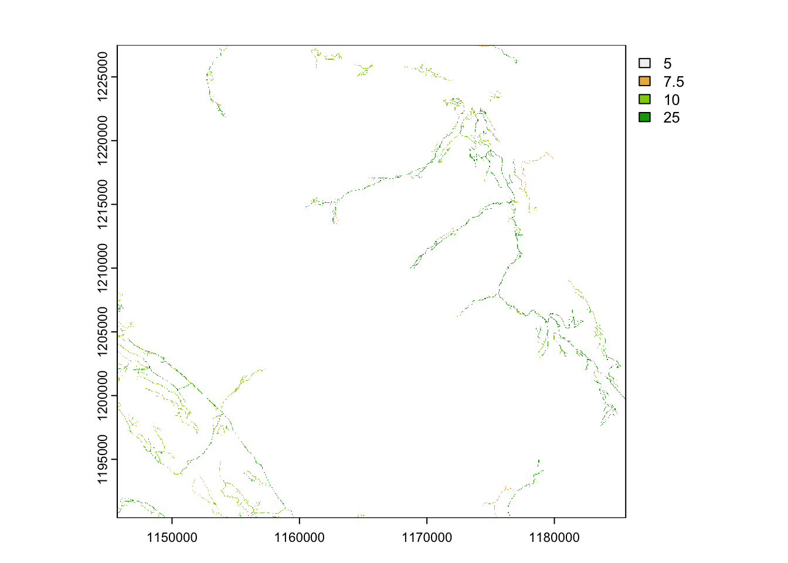

Processing Base Vector Data
Overview:
In this module we will post-process vector data we prepared earlier using the terra package. This includes;
- generate a road impact raster
- calculate a distance to water raster
- convert vectors to rasters
- combine all rasters into a raster stack and export
1. Road influence
To assemble meaningful information for modelling, we often need to post-process vector data. This could include manipulating the data into categories (i.e. high, medium, low) or exploring spatial patterns in more detail (i.e. distance from a road)
In this example we will generate a raster to quantifying the impact of road type and spatial orientation.
We can assume the impact of road type (ROAD_SURFACE) might have a different impact on Caribou avoidance or predator use.
We can use this column to assign values to reflect this. In this example we assign a higher value to roads that are likely to be traveled at a higher speed and would have more frequent use.
# assign a value to the roads based on estimated speed of travel or use
roads <- roads |>
mutate(rd_value = case_when(
ROAD_SURFACE == "loose" ~ 25,
ROAD_SURFACE == "overgrown" ~ 5,
ROAD_SURFACE == "rough" ~ 10,
ROAD_SURFACE == "unknown" ~ 7.5)) Now we can convert the vector to a raster using the template
# convert roads to a raster
rroads <- rasterize(roads, template, field = "rd_value" )
plot(rroads)
Secondly, we can assume the impact of the road will have a wider influence than a single pixel. To capture this influence we use a moving window analysis.
Moving windows or focal calculations estimate a new value for each pixel based on the values of the surrounding pixels (neighbours) and the function we supply. In this example we will use a window of 9, and a calculation based on the sum of these 9 pixels.
# create a moving window
rrdens <- focal(rroads, w=9, fun="sum", na.rm=TRUE)
plot(rrdens)
writeRaster(rrdens, "clean_data/road_density.tif", overwrite = TRUE) 2. Calculate distance from water
We might also be interested in understanding the relationship between Caribou locations and distance to a particular feature or habitat type.
In this case we will explore the distance to water bodies within the study areas.
# read in water
water <- read_sf("clean_data/water.gpkg")
# calculate the distance to water for each pixel in the raster
# be patient - this might take some time.
water_dis <- distance(template, water, unit = "km")
|---------|---------|---------|---------|
=========================================
# what sort of values are we seeing?
range(water_dis)class : SpatRaster
dimensions : 1484, 1596, 2 (nrow, ncol, nlyr)
resolution : 25, 25 (x, y)
extent : 1145700, 1185600, 1190400, 1227500 (xmin, xmax, ymin, ymax)
coord. ref. : NAD83 / BC Albers (EPSG:3005)
source(s) : memory
names : range_min, range_max
min values : 0.000000, 0.000000
max values : 6.090321, 6.090321 3. Convert base vector data to rasters
To prepare rasters for modelling and further analysis, we can convert all our vector data into one standard raster stack.
Note: it is not always required to convert to a raster stack, but this is helpful for any future predictions.
# read in our prepared vector data sets
bec <- read_sf("clean_data/bec.gpkg")
vri_conif <- read_sf("clean_data/vri_conif.gpkg")
vri_ageclass <- read_sf("clean_data/vri_ageclass.gpkg")
vri_cc <- read_sf("clean_data/vri_cc.gpkg")
cutblocks <- read_sf("clean_data/cutblocks.gpkg")
water <- read_sf("clean_data/water.gpkg")
streams <- read_sf("clean_data/streams.gpkg")
roads <- read_sf("clean_data/roads.gpkg")
# convert to rasters
rbec <- rasterize(bec, template, field = "MAP_LABEL")
rvri_conif <- rasterize(vri_conif, template, field = "conif")
rvri_ageclass <- rasterize(vri_ageclass, template, field = "age_class")
rvri_cc <- rasterize(vri_cc, template, field = "cc_class" )
rcutblocks <- rasterize(cutblocks, template, field = "HARVEST_YEAR")
rwater <- rasterize(water, template, field = "WATERBODY_TYPE" )
rstreams <- rasterize(streams, template, field = "STREAM_ORDER" )
rroads <- rasterize(roads, template, field = "ROAD_SURFACE" )
# stack into a set of rasters
vect_stack <- c(rbec, rvri_conif, rvri_ageclass, rvri_cc,
rcutblocks, rwater, rstreams, rroads,
water_dis, rrdens)
plot(vect_stack)Lets combine these with the terrain rasters we created earlier.
rslope <- rast("clean_data/slope.tif")
raspect <- rast("clean_data/aspect.tif")
rtri <- rast("clean_data/tri.tif")
rtrim_3005 <- rast("clean_data/dem.tif")
# create a raster stack
rast_stack <- c(rtrim_3005, rslope, raspect, rtri)4. Combine raster layers into a stack
# we can write this out as a tif (raster object)
#writeRaster(all_stack, "clean_data/rstack.tif", overwrite = T)Or we can write this out to a very small R object
saveRDS(all_stack, "clean_data/covars.RDS") # much fasterYour turn
- Generate a road density later using a different function (i.e. not sum), and or different scale of window (w). Hint: use the ?focal to see other options available.
# One example would be to generate the "max" value of the moving window. Note the w parameter is also reduced in the example.
rrdensmax <- focal(rroads, w=3, fun="max", na.rm=TRUE)- Select another linear feature (roads, steams) and generate a raster to capture the distance to that feature for the study area.
#This solution generates a distance from roads covariate
roads <- read_sf("clean_data/roads.gpkg") # read in roads
road_dis <- distance(template, roads, unit = "km") # calculate distance - be patient this might take time.
|---------|---------|---------|---------|
=========================================
plot(road_dis)